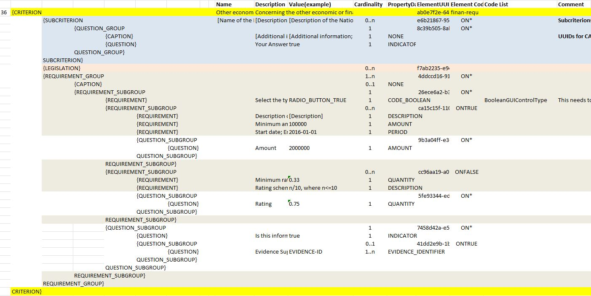

Other economic or financial requirements
Related information requirements
See formal requirements related to selection criteria in the BIS 41 - European Single Procurement Document (Version 2.0.0).
The only criterion defined is classified with the code:
-
finan-requ
Buyer perspective
The buyer has selected the option other economic or financial requirements for its inclusion in the ESPD Request.
Additionally the buyer can specify REQUIREMENT(s) specific to the procurement procedure. There are two situations that need to be distinguished here, when the procurement procedure is divided into Lots and when it is not.
Thus, for this criterion the buyer will be able to:
-
Either add multiple requirements. For each requirement, the Buyer will need to provide the description of the requirement, the minimum amount and currency and the start and end date; or it will need to provide the minimum rating and the rating schema.
-
In the ESPDResponse, the EO will be required to provide, for each requirement, the amount and currency.
-
When the procedure includes more than one Lot: The buyer can specify the Lots the criteria applies to.
Notice that in the mock-up below the first requirement is about an economic of financial requirement whilst the second requirement is about a rating requirement. See data structure and XML example for more details on this distiction.
Mock-up - economic operator perspective
The economic operator, in its view, sees all the requirements defined by the buyer and responds to this requirements with an amount and currency. See XML example below to identify where these data are placed in the XML instance.

Figure 148. 'Other economic or financial requirements' EO mock-up
Note that the EO should provide an answer (ESPD Response) for every Lot that tenders. Meaning that if the Selection Criteria applies to different Lots (as can be read in the mockup), the EO should sumbit the data for the number of lots that apply.
Data Structure
Notice the following aspects from the 'other economic or financial requirements':
-
It allows for capturing multiple national criteria;
-
It specifies the Legislation component for the EU parent criterion. So far so good, no differences until now;
-
There’s a group of REQUIREMENT(s) and QUESTION(s).
-
The group of REQUIREMENT(s) defines a caption that is kep empty (no name, no description, no value. You will have noticed this also in other criteria. The reason for having this dummy CAPTION is that the UBL-2.3 model requires always at least one cac:TenderingCriterionProperty element instance inside a group or sub-group of properties;
-
The most important part comes now: You have a kind of choice here: one of the two subgroups the data will be shown (or not) depending on the answer of the buyer * to the REQUIREMENT: *Select the type of requirement. If the CA’s answer was economic or financial requirement the application takes it as a true; otherwise it is considered false:
-
On true (see the group code on the right side of the data structure) three REQUIREMENT(s) will be shown to the economic operator: description, minimum amount and period. For this REQUIREMENT the economic operator will see all these requirements and will have to provide an amount.
-
On false (see the group code on the right side of the data structure) three REQUIREMENT(s) will be shown to the economic operator: minimum rating and rating scheme. For this REQUIREMENT the economic operator will see all these requirements and will have to provide a rating.
-

Figure 149. 'Other economic or financial requirements' criterion data structure
XML Example
'Other economic or financial requirements' criterion
<!-- ... header elements removed for brevity ... -->
<!-- Criterion:Other economic or financial requirements -->
<cac:TenderingCriterion>
<cbc:ID schemeID="criterion" schemeAgencyID="OP" schemeVersionID="3.2.0">ab0e7f2e-6418-40e2-8870-6713123e41ad</cbc:ID>
<cbc:CriterionTypeCode listID="http://publications.europa.eu/resource/authority/criterion" listAgencyID="OP" listVersionID="20210616-0">finan-requ</cbc:CriterionTypeCode>
<cbc:Name>Other economic or financial requirements</cbc:Name>
<cbc:Description>Concerning the other economic or financial requirements, if any, that may have been specified in the relevant notice or in the ESPD, the economic operator declares that:</cbc:Description>
<cac:ProcurementProjectLotReference>
<cbc:ID schemeID="Criterion" schemeAgencyID="OP" schemeVersionID="3.2.0">LOT-00000</cbc:ID>
</cac:ProcurementProjectLotReference>
<cac:ProcurementProjectLotReference>
<cbc:ID schemeID="Criterion" schemeAgencyID="OP" schemeVersionID="3.2.0">LOT-00001</cbc:ID>
</cac:ProcurementProjectLotReference>
<cac:SubTenderingCriterion>
<cbc:ID schemeID="criterion" schemeAgencyID="OP" schemeVersionID="3.2.0">e6b21867-95b5-4549-8180-f4673219b179</cbc:ID>
<cbc:Name>[Name of the National Criterion]</cbc:Name>
<cbc:Description>[Description of the National Criterion ]</cbc:Description>
<cac:TenderingCriterionPropertyGroup>
<cbc:ID schemeID="criterion" schemeAgencyID="OP" schemeVersionID="3.2.0">8c39b505-8abe-44fa-a3e0-f2d78b9d8224</cbc:ID>
<cbc:PropertyGroupTypeCode listID="property-group-type" listAgencyID="OP" listVersionID="3.2.0">ON*</cbc:PropertyGroupTypeCode>
<cac:TenderingCriterionProperty>
<cbc:ID schemeID="criterion" schemeAgencyID="OP" schemeVersionID="3.2.0">183ffa32-4222-4aee-8d56-f94a4e88c09b</cbc:ID>
<cbc:Description>[Additional information; e.g. no evidences online]</cbc:Description>
<cbc:TypeCode listID="criterion-element-type" listAgencyID="OP" listVersionID="3.2.0">CAPTION</cbc:TypeCode>
<cbc:ValueDataTypeCode listID="response-data-type" listAgencyID="OP" listVersionID="3.2.0">NONE</cbc:ValueDataTypeCode>
</cac:TenderingCriterionProperty>
<cac:TenderingCriterionProperty>
<cbc:ID schemeID="criterion" schemeAgencyID="OP" schemeVersionID="3.2.0">fe442288-267f-4151-a8fe-c3582ba8723f</cbc:ID>
<cbc:Description>Your Answer</cbc:Description>
<cbc:TypeCode listID="criterion-element-type" listAgencyID="OP" listVersionID="3.2.0">QUESTION</cbc:TypeCode>
<cbc:ValueDataTypeCode listID="response-data-type" listAgencyID="OP" listVersionID="3.2.0">INDICATOR</cbc:ValueDataTypeCode>
</cac:TenderingCriterionProperty>
</cac:TenderingCriterionPropertyGroup>
</cac:SubTenderingCriterion>
<cac:Legislation>
<cbc:ID schemeID="criterion" schemeAgencyID="OP" schemeVersionID="3.2.0">0eb7f3ad-0f05-49c7-9dc7-51def9444679</cbc:ID>
<cbc:Title>[Legislation title]</cbc:Title>
<cbc:Description>[Legislation description]</cbc:Description>
<cbc:JurisdictionLevel>EU</cbc:JurisdictionLevel>
<cbc:Article>[Article, e.g. Article 2.I.a]</cbc:Article>
<cbc:URI>http://eur-lex.europa.eu/</cbc:URI>
<cac:Language>
<cbc:LocaleCode listID="http://publications.europa.eu/resource/authority/language" listAgencyName="OP" listVersionID="20211208-0">ENG</cbc:LocaleCode>
</cac:Language>
</cac:Legislation>
<cac:TenderingCriterionPropertyGroup>
<cbc:ID schemeID="criterion" schemeAgencyID="OP" schemeVersionID="3.2.0">4ddccd16-91e4-4b72-ae0f-78f2f1ab9490</cbc:ID>
<cbc:PropertyGroupTypeCode listID="property-group-type" listAgencyID="OP" listVersionID="3.2.0">ON*</cbc:PropertyGroupTypeCode>
<cac:TenderingCriterionProperty>
<cbc:ID schemeID="criterion" schemeAgencyID="OP" schemeVersionID="3.2.0">77b68ed2-4c20-4b0d-9e06-e09baf8ca5f7</cbc:ID>
<cbc:Description/>
<cbc:TypeCode listID="criterion-element-type" listAgencyID="OP" listVersionID="3.2.0">CAPTION</cbc:TypeCode>
<cbc:ValueDataTypeCode listID="response-data-type" listAgencyID="OP" listVersionID="3.2.0">NONE</cbc:ValueDataTypeCode>
</cac:TenderingCriterionProperty>
<cac:SubsidiaryTenderingCriterionPropertyGroup>
<cbc:ID schemeID="criterion" schemeAgencyID="OP" schemeVersionID="3.2.0">26ece6a2-b360-46c1-890d-8338913b8719</cbc:ID>
<cbc:PropertyGroupTypeCode listID="property-group-type" listAgencyID="OP" listVersionID="3.2.0">ON*</cbc:PropertyGroupTypeCode>
<cac:TenderingCriterionProperty>
<cbc:ID schemeID="criterion" schemeAgencyID="OP" schemeVersionID="3.2.0">977149e9-9a91-4aa6-acb6-6928a0dd6609</cbc:ID>
<cbc:Description>Select the type of requirement</cbc:Description>
<cbc:TypeCode listID="criterion-element-type" listAgencyID="OP" listVersionID="3.2.0">REQUIREMENT</cbc:TypeCode>
<cbc:ValueDataTypeCode listID="response-data-type" listAgencyID="OP" listVersionID="3.2.0">CODE_BOOLEAN</cbc:ValueDataTypeCode>
<!-- No answer is expected here from the economic operator, as this is a REQUIREMENT issued by the buyer. Hence the element 'cbc:ValueDataTypeCode' contains the type of value of the requirement issued by the buyer -->
<cbc:ExpectedCode listID="boolean-gui-control-type" listAgencyID="OP" listVersionID="3.2.0">RADIO_BUTTON_TRUE</cbc:ExpectedCode>
</cac:TenderingCriterionProperty>
<cac:SubsidiaryTenderingCriterionPropertyGroup>
<cbc:ID schemeID="criterion" schemeAgencyID="OP" schemeVersionID="3.2.0">ca15c15f-110e-4a10-8d6e-5e41cf5f9098</cbc:ID>
<cbc:PropertyGroupTypeCode listID="property-group-type" listAgencyID="OP" listVersionID="3.2.0">ONTRUE</cbc:PropertyGroupTypeCode>
<cac:TenderingCriterionProperty>
<cbc:ID schemeID="criterion" schemeAgencyID="OP" schemeVersionID="3.2.0">4d879427-f3e8-431b-a516-1c0f22edd56a</cbc:ID>
<cbc:Description>Description of the economic or financial requirement</cbc:Description>
<cbc:TypeCode listID="criterion-element-type" listAgencyID="OP" listVersionID="3.2.0">REQUIREMENT</cbc:TypeCode>
<cbc:ValueDataTypeCode listID="response-data-type" listAgencyID="OP" listVersionID="3.2.0">DESCRIPTION</cbc:ValueDataTypeCode>
<!-- No answer is expected here from the economic operator, as this is a REQUIREMENT issued by the buyer. Hence the element 'cbc:ValueDataTypeCode' contains the type of value of the requirement issued by the buyer -->
<cbc:ExpectedDescription>[Description]</cbc:ExpectedDescription>
</cac:TenderingCriterionProperty>
<cac:TenderingCriterionProperty>
<cbc:ID schemeID="criterion" schemeAgencyID="OP" schemeVersionID="3.2.0">dc0e4df7-166d-49c0-b2bf-461c870a0f30</cbc:ID>
<cbc:Description>Minimum amount</cbc:Description>
<cbc:TypeCode listID="criterion-element-type" listAgencyID="OP" listVersionID="3.2.0">REQUIREMENT</cbc:TypeCode>
<cbc:ValueDataTypeCode listID="response-data-type" listAgencyID="OP" listVersionID="3.2.0">AMOUNT</cbc:ValueDataTypeCode>
<!-- No answer is expected here from the economic operator, as this is a REQUIREMENT issued by the buyer. Hence the element 'cbc:ValueDataTypeCode' contains the type of value of the requirement issued by the buyer -->
<cbc:ExpectedAmount currencyID="EUR"
>100000</cbc:ExpectedAmount>
</cac:TenderingCriterionProperty>
<cac:TenderingCriterionProperty>
<cbc:ID schemeID="criterion" schemeAgencyID="OP" schemeVersionID="3.2.0">77094dbc-28ea-43ce-b984-2bc1fd0e0484</cbc:ID>
<cbc:Description>Start date; End date</cbc:Description>
<cbc:TypeCode listID="criterion-element-type" listAgencyID="OP" listVersionID="3.2.0">REQUIREMENT</cbc:TypeCode>
<cbc:ValueDataTypeCode listID="response-data-type" listAgencyID="OP" listVersionID="3.2.0">PERIOD</cbc:ValueDataTypeCode>
<!-- No answer is expected here from the economic operator, as this is a REQUIREMENT issued by the buyer. Hence the element 'cbc:ValueDataTypeCode' contains the type of value of the requirement issued by the buyer -->
<cac:ApplicablePeriod>
<cbc:StartDate>2016-01-01</cbc:StartDate>
<cbc:EndDate>2016-01-01</cbc:EndDate>
</cac:ApplicablePeriod>
</cac:TenderingCriterionProperty>
<cac:SubsidiaryTenderingCriterionPropertyGroup>
<cbc:ID schemeID="criterion" schemeAgencyID="OP" schemeVersionID="3.2.0">9b3a04ff-e36d-4d4f-b47c-82ad402b9b02</cbc:ID>
<cbc:PropertyGroupTypeCode listID="property-group-type" listAgencyID="OP" listVersionID="3.2.0">ON*</cbc:PropertyGroupTypeCode>
<cac:TenderingCriterionProperty>
<cbc:ID schemeID="criterion" schemeAgencyID="OP" schemeVersionID="3.2.0">01e45356-eaea-48ab-9cfa-e580ce9d00b0</cbc:ID>
<cbc:Description>Amount</cbc:Description>
<cbc:TypeCode listID="criterion-element-type" listAgencyID="OP" listVersionID="3.2.0">QUESTION</cbc:TypeCode>
<cbc:ValueDataTypeCode listID="response-data-type" listAgencyID="OP" listVersionID="3.2.0">AMOUNT</cbc:ValueDataTypeCode>
</cac:TenderingCriterionProperty>
</cac:SubsidiaryTenderingCriterionPropertyGroup>
</cac:SubsidiaryTenderingCriterionPropertyGroup>
<cac:SubsidiaryTenderingCriterionPropertyGroup>
<cbc:ID schemeID="criterion" schemeAgencyID="OP" schemeVersionID="3.2.0">cc96aa19-a0be-4409-af58-ff3f3812741b</cbc:ID>
<cbc:PropertyGroupTypeCode listID="property-group-type" listAgencyID="OP" listVersionID="3.2.0">ONFALSE</cbc:PropertyGroupTypeCode>
<cac:TenderingCriterionProperty>
<cbc:ID schemeID="criterion" schemeAgencyID="OP" schemeVersionID="3.2.0">d996223a-3f54-4803-bf05-39019c843e94</cbc:ID>
<cbc:Description>Minimum rating</cbc:Description>
<cbc:TypeCode listID="criterion-element-type" listAgencyID="OP" listVersionID="3.2.0">REQUIREMENT</cbc:TypeCode>
<cbc:ValueDataTypeCode listID="response-data-type" listAgencyID="OP" listVersionID="3.2.0">QUANTITY</cbc:ValueDataTypeCode>
<!-- No answer is expected here from the economic operator, as this is a REQUIREMENT issued by the buyer. Hence the element 'cbc:ValueDataTypeCode' contains the type of value of the requirement issued by the buyer -->
<cbc:ExpectedValueNumeric>0.33</cbc:ExpectedValueNumeric>
</cac:TenderingCriterionProperty>
<cac:TenderingCriterionProperty>
<cbc:ID schemeID="criterion" schemeAgencyID="OP" schemeVersionID="3.2.0">864e1a59-d53f-4810-b8f5-ab701b90972f</cbc:ID>
<cbc:Description>Rating scheme</cbc:Description>
<cbc:TypeCode listID="criterion-element-type" listAgencyID="OP" listVersionID="3.2.0">REQUIREMENT</cbc:TypeCode>
<cbc:ValueDataTypeCode listID="response-data-type" listAgencyID="OP" listVersionID="3.2.0">DESCRIPTION</cbc:ValueDataTypeCode>
<!-- No answer is expected here from the economic operator, as this is a REQUIREMENT issued by the buyer. Hence the element 'cbc:ValueDataTypeCode' contains the type of value of the requirement issued by the buyer -->
<cbc:ExpectedDescription>n/10, where n<=10</cbc:ExpectedDescription>
</cac:TenderingCriterionProperty>
<cac:SubsidiaryTenderingCriterionPropertyGroup>
<cbc:ID schemeID="criterion" schemeAgencyID="OP" schemeVersionID="3.2.0">5fe93344-ed91-4f97-bcab-b6720a131798</cbc:ID>
<cbc:PropertyGroupTypeCode listID="property-group-type" listAgencyID="OP" listVersionID="3.2.0">ON*</cbc:PropertyGroupTypeCode>
<cac:TenderingCriterionProperty>
<cbc:ID schemeID="criterion" schemeAgencyID="OP" schemeVersionID="3.2.0">d40e05a3-5a2b-4743-8cbf-935176fbeff4</cbc:ID>
<cbc:Description>Rating</cbc:Description>
<cbc:TypeCode listID="criterion-element-type" listAgencyID="OP" listVersionID="3.2.0">QUESTION</cbc:TypeCode>
<cbc:ValueDataTypeCode listID="response-data-type" listAgencyID="OP" listVersionID="3.2.0">QUANTITY</cbc:ValueDataTypeCode>
</cac:TenderingCriterionProperty>
</cac:SubsidiaryTenderingCriterionPropertyGroup>
</cac:SubsidiaryTenderingCriterionPropertyGroup>
</cac:SubsidiaryTenderingCriterionPropertyGroup>
<cac:SubsidiaryTenderingCriterionPropertyGroup>
<cbc:ID schemeID="criterion" schemeAgencyID="OP" schemeVersionID="3.2.0">7458d42a-e581-4640-9283-34ceb3ad4345</cbc:ID>
<cbc:PropertyGroupTypeCode listID="property-group-type" listAgencyID="OP" listVersionID="3.2.0">ON*</cbc:PropertyGroupTypeCode>
<cac:TenderingCriterionProperty>
<cbc:ID schemeID="criterion" schemeAgencyID="OP" schemeVersionID="3.2.0">106705b8-e981-45c1-9fb9-f6014fd6fedb</cbc:ID>
<cbc:Description>Is this information available electronically?</cbc:Description>
<cbc:TypeCode listID="criterion-element-type" listAgencyID="OP" listVersionID="3.2.0">QUESTION</cbc:TypeCode>
<cbc:ValueDataTypeCode listID="response-data-type" listAgencyID="OP" listVersionID="3.2.0">INDICATOR</cbc:ValueDataTypeCode>
</cac:TenderingCriterionProperty>
<cac:SubsidiaryTenderingCriterionPropertyGroup>
<cbc:ID schemeID="criterion" schemeAgencyID="OP" schemeVersionID="3.2.0">41dd2e9b-1bfd-44c7-93ee-56bd74a4334b</cbc:ID>
<cbc:PropertyGroupTypeCode listID="property-group-type" listAgencyID="OP" listVersionID="3.2.0">ONTRUE</cbc:PropertyGroupTypeCode>
<cac:TenderingCriterionProperty>
<cbc:ID schemeID="criterion" schemeAgencyID="OP" schemeVersionID="3.2.0">fb63482a-83ae-42bb-9730-ec2874f06604</cbc:ID>
<cbc:Description>Evidence Supplied</cbc:Description>
<cbc:TypeCode listID="criterion-element-type" listAgencyID="OP" listVersionID="3.2.0">QUESTION</cbc:TypeCode>
<cbc:ValueDataTypeCode listID="response-data-type" listAgencyID="OP" listVersionID="3.2.0">EVIDENCE_IDENTIFIER</cbc:ValueDataTypeCode>
</cac:TenderingCriterionProperty>
</cac:SubsidiaryTenderingCriterionPropertyGroup>
</cac:SubsidiaryTenderingCriterionPropertyGroup>
</cac:TenderingCriterionPropertyGroup>
</cac:TenderingCriterion>
<!-- ... rest of elements removed for brevity ... -->